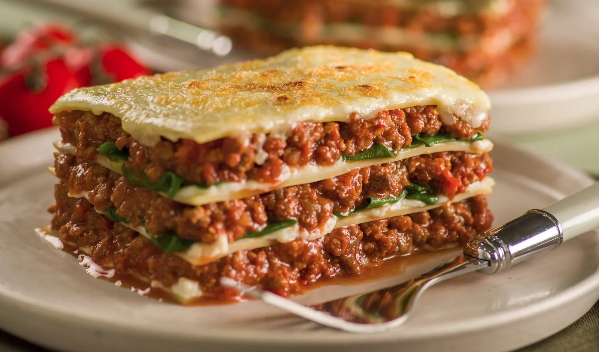

Ingredientes
- 500g de massa para lasanha
- 500g de carne moída
- 1 cebola picada
- 2 dentes de alho picados
- 2 latas de molho de tomate
- 500g de queijo mussarela fatiado
- 300g de presunto fatiado
- Sal e pimenta a gosto
- Orégano a gosto
- Queijo parmesão ralado a gosto
Modo de Preparo
- Em uma panela, refogue a cebola e o alho até dourarem.
- Adicione a carne moída e cozinhe até que esteja bem dourada.
- Acrescente o molho de tomate, o sal, a pimenta e o orégano. Deixe cozinhar por cerca de 10 minutos.
- Em um refratário, monte a lasanha alternando camadas de massa, molho de carne, presunto e mussarela.
- Repita as camadas até que os ingredientes acabem, finalizando com uma camada de molho e queijo mussarela.
- Polvilhe o queijo parmesão ralado por cima.
- Leve ao forno pré-aquecido a 180°C por cerca de 30 minutos, ou até que a lasanha esteja dourada e borbulhante.
- Retire do forno e deixe descansar por alguns minutos antes de servir.